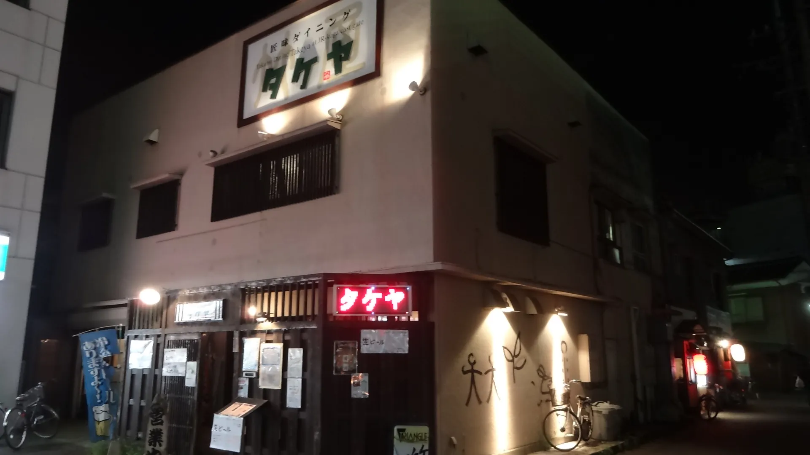
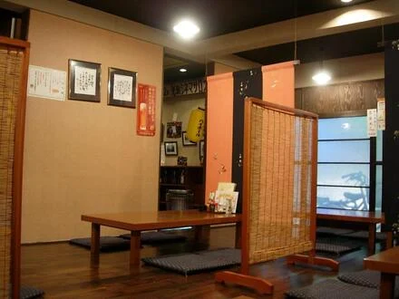
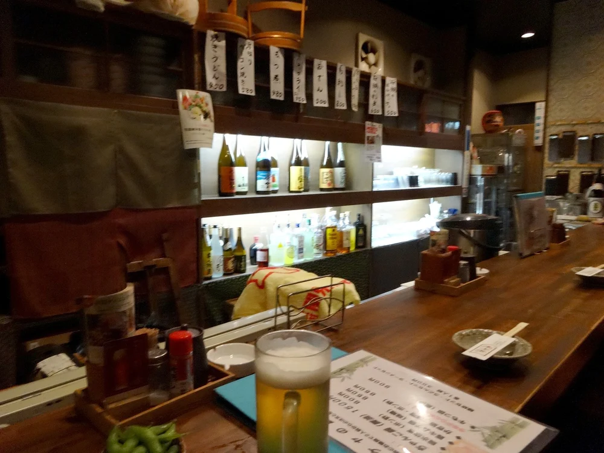
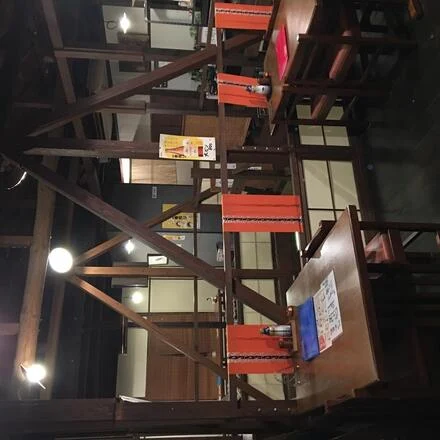
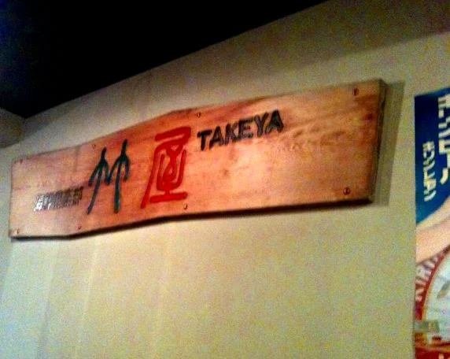

当店の看板は、事前のご予約で承る、百二十分の食べ放題＆飲み放題でございます。
お料理も、お飲みものも、五十種を超える品書きから思うままに。
追加のご注文を気にせず、はじめから終わりまでゆっくりお過ごしいただけます。
お時間・お料金・ご人数は、お電話でご案内いたします。 0280-33-1415
図の短冊は五十枚ずつ。お品はこれより多くございます。
銘柄のお酒も、飲み放題のうちでございます。
鍋付き・刺し盛りへの変更も、ご予約に限り承ります。
隠れ家的な作りの店内で、ジャズを聴きながらゆったりおくつろぎください。
お座敷とカウンターをご用意しております。お一人様でも、ごゆっくりどうぞ。
二十名様から五十名様までの貸切、十五名様以上の大人数のお集まりも承ります。ご人数はまずご相談くださいませ。
ミーティングや会合など、レンタルスペースとしてのご利用もご相談ください。




初めて利用しました。
お客様の声より
メニューも豊富で美味しかったです。
スタッフさんも、とても親切にしてくれました。
古河で一杯やるとき、必ずまた寄ります。
お客様の声より
落ち着いた感じでたくさんの変わった日本酒・焼酎がありました。カウンター席もあり1人でもゆっくり飲めました。料理は職人さんが作っているそうでおいしかったです。
お客様の声より
JR古河駅東口を出てすぐ、駅前ロータリーの角でございます。
駐車場はございませんので、電車でのお越しが便利です。
| 住所 | 〒306-0013 茨城県古河市東本町1-2-14 |
|---|---|
| 電話 | 0280-33-1415 |
| 営業時間 | お電話でお確かめください。 0280-33-1415 |
| 駐車場 | ございません |
| お支払い | 現金・クレジットカード（電子マネーは非対応） |
詳しい営業時間は、お電話でお確かめください。ご予約のお電話も、お待ちしております。